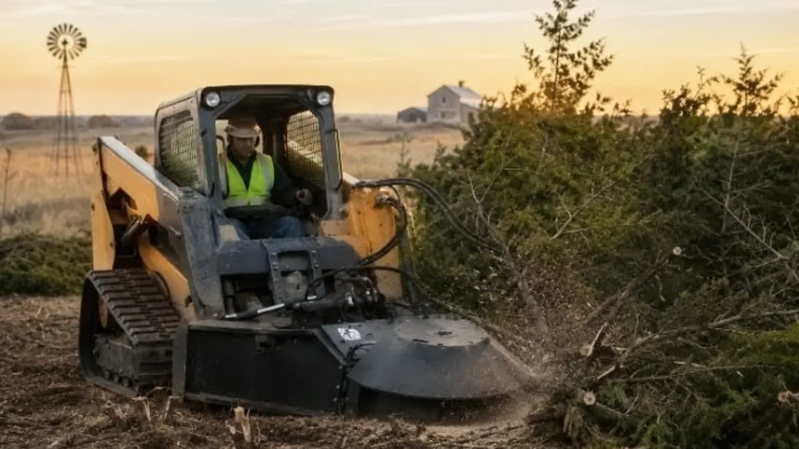

Excavation & Trenching
Site clearing, grading, and excavation for new builds, additions, and utilities across Central Kansas.
Learn MoreBrush removal, pasture clearing, tree clearing, and debris hauling for residential and commercial properties across Central Kansas. We clear it right so you can use your land.

Overgrown Kansas land does not clear itself. Whether you have inherited a neglected property, purchased raw acreage for development, or need to reclaim pasture ground that has been taken over by brush and cedar, Mike's Services LLC has the equipment and experience to get it done efficiently and cleanly.
Request a QuoteLand clearing is the process of removing trees, brush, stumps, overgrowth, and debris from a property to make it usable for construction, agriculture, grazing, or general use. In Central Kansas, land clearing is one of the most common site work needs — cedar encroachment on pasture land, overgrown farmsteads, neglected rural lots, and raw acreage being prepared for new construction all require professional clearing to do efficiently and safely.
The scope of a clearing project depends entirely on what is there and what you want when it is done. Some property owners want selective clearing — removing invasive species and dead trees while leaving desirable ones. Others need a complete clearing for new construction or to restore productive pasture. We assess your property before quoting, so you get a plan that matches your actual goals rather than a one-size-fits-all approach.
Cedar encroachment is a particularly common problem across Central Kansas. Eastern red cedar spreads aggressively across pasture and rangeland, crowding out grass, consuming water, and reducing the carrying capacity of grazing land significantly. Clearing cedar and managing regrowth can restore pasture productivity and improve the long-term value of your property. We have cleared cedar from properties across multiple Central Kansas counties and understand the scale these jobs can reach.
After clearing, debris can be hauled off, pushed into burn piles depending on county burn regulations, chipped, or graded into the soil. We discuss your preference and what makes sense for your property before we start.
Land clearing services from Mike's Services LLC include:
Mike's Services LLC provides land clearing throughout Central Kansas including Salina, Tescott, Bennington, Minneapolis, Lincoln, Ellsworth, and Abilene. We serve property owners across Saline County, Ottawa County, Lincoln County, Dickinson County, Ellsworth County, and Cloud County. Have a larger acreage project or are not sure if we cover your area? Call us and we will give you a straight answer.
Common questions from Central Kansas property owners about land clearing.
Land clearing cost depends on the density of vegetation, acreage, terrain, and what you want done with the debris. Light brush clearing on an acre runs significantly less than dense cedar removal across multiple acres. We visit the site and give you a firm quote before any work begins so you know exactly what to expect.
Most rural land clearing in Kansas does not require a permit, but there are exceptions — particularly near waterways, wetlands, or in municipalities. If your property has any of these features we will flag it during our site visit. Burn permits may also be required depending on your county and time of year.
Yes. We handle projects ranging from light brush removal to clearing mature trees and large cedar stands. Equipment selection depends on the size and density of what needs to come out. We assess the job and bring the right equipment for the work.
Cleared material can be hauled off the property, pushed into burn piles subject to county burn regulations, chipped and spread, or left in windrows depending on your preference and what makes sense for the site. We discuss this with you before we start so the end result matches what you envisioned.
A small residential lot can be cleared in a day. Multi-acre pasture clearing or heavy cedar removal projects may take several days. We give you a realistic timeframe in the quote based on the actual scope of your project.
Land clearing often leads into the next phase of your project — we handle that too.
Site clearing, grading, and excavation for new builds, additions, and utilities across Central Kansas.
Learn More
Precision grading and compaction for building pads, driveways, and new construction sites.
Learn More
Full septic system installation including excavation, tank placement, drain field, and inspector coordination.
Learn More
Small and large demolition, removal, and clean-up with safe disposal and efficient hauling.
Learn More📄 From the Blog: Land Clearing in Central Kansas — What It Costs and What to Expect — read the full guide.
📄 From the Blog: Land Clearing Cost Per Acre in Saline County, KS — read the full guide.
Tell us about your property and what you want cleared. We will come out, take a look, and give you a straight quote.